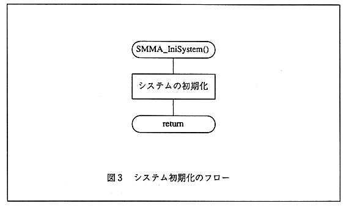
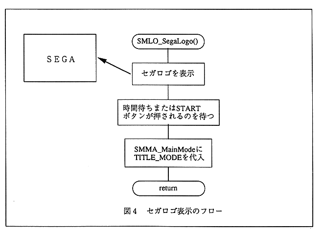

Return to previous page ｜ Return to menu ｜ Go to next page
-
SMMA_IniSystem () System initialization
- System initialization as shown in Fig. 3.
Initialize hardware etc. within the system initialization process.

Figure 3 System initialization flow
-
SMLO_SegaLogo () SEGA logo display
- Displays the SEGA logo as shown in Fig. 4.
】 Since the game mode variable is returned as TITLE_MODE, it will return to the title display unconditionally.

Figure 4 Sega logo display flow
Return to previous page ｜ Return to menu ｜ Go to next page